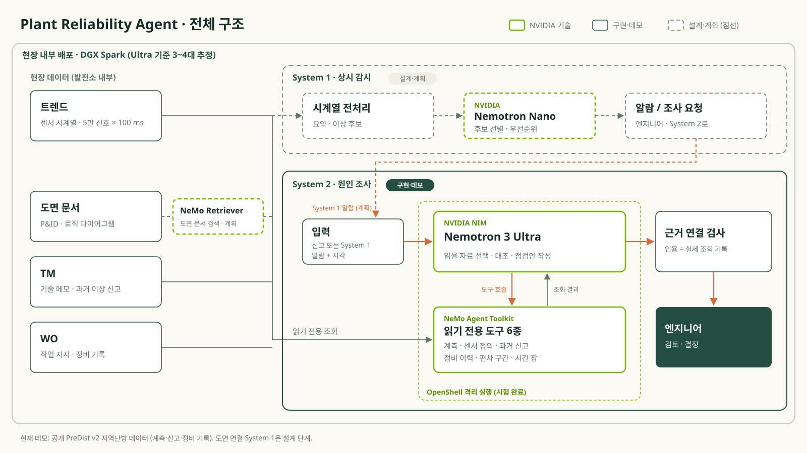
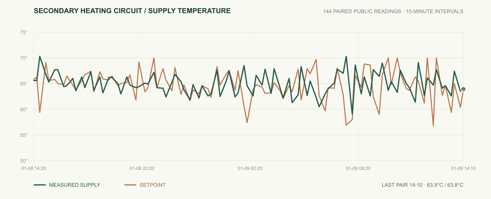
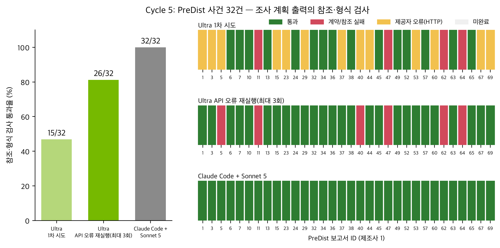

SYSTEM 1 · 상시 감시설계 · 이전 실험
트렌드를 보고 이상을 알림설계 부하는 신호 5만 개를 0.1초마다 읽는 것, 즉 초당 50만 개 관측값입니다. 이걸 모두 큰 모델에 보낼 수는 없으므로, 시계열 코드가 이상 후보를 추리고 Nemotron Nano 같은 작은 모델이 우선순위를 정하는 구조입니다. 지금은 설계와 이전 소규모 실험 단계입니다.
이전 Nano 선별 실험 보기 ↗NVIDIA Korea Agentic AI Hackathon 2026
설비에 이상이 생기면 엔지니어는 도면, 정비 요청(TM), 작업 지시(WO), 트렌드 데이터를 하나씩 찾아 맞춰 봐야 합니다. 하지만 발전소는 보안 때문에 외부 클라우드 AI를 쓰기 어렵습니다. Plant는 현장 안에 설치할 수 있는 NVIDIA Nemotron 모델로, 흩어진 자료를 연결해 원인 조사를 돕고 다음 점검을 근거와 함께 제안하는 에이전트입니다.
옆 사례 카드는 공개 지역난방 데이터(PreDist v2)로 재현한 실제 신고 · NVIDIA Nemotron 3 Ultra로 실행한 기록
실내 온도, 건물 배관에 흐르는 물의 양, 온도 조절 설정 변경
왜 이 문제인가
계획에 없던 설비 정지(비계획 정지)는 생산 손실로 곧바로 이어집니다. 현장에서는 여러 이슈가 동시에 생기는데, 판단에 필요한 자료가 서로 다른 시스템에 나뉘어 있어 사람이 빠르게 원인을 좁히기 어렵습니다.
포춘 글로벌 500 기업이 비계획 정지로 잃는 금액, 매출의 약 11%입니다(대형 산업 전반 기준). Siemens, True Cost of Downtime 2024 ↗
P&ID·로직 다이어그램 같은 도면, 기술 메모와 정비 요청(TM), 작업 지시(WO), 시간별 계측 트렌드가 모두 따로 있습니다. 이걸 맞춰 보는 데 시간이 가장 많이 듭니다.
발전 설비의 제어·운영망은 외부망과 분리하고 출입을 통제하는 것이 원칙입니다. 그래서 현장 안에 설치할 수 있는 모델이 필요합니다. NERC CIP-005-7 ↗ · 국정원 N2SF ↗
상시 감시는 빠르고 가벼워야 하고, 원인 조사는 여러 자료를 깊게 읽고 추론해야 합니다. 요구가 정반대라서 두 부분으로 나눴습니다.
설계 부하는 신호 5만 개를 0.1초마다 읽는 것, 즉 초당 50만 개 관측값입니다. 이걸 모두 큰 모델에 보낼 수는 없으므로, 시계열 코드가 이상 후보를 추리고 Nemotron Nano 같은 작은 모델이 우선순위를 정하는 구조입니다. 지금은 설계와 이전 소규모 실험 단계입니다.
이전 Nano 선별 실험 보기 ↗문제가 생기면 Nemotron 3 Ultra가 계측·센서 설명·과거 신고·정비 기록을 스스로 골라 읽고, 무엇을 왜 확인해야 하는지 원본 기록과 연결해 엔지니어에게 넘깁니다. 이번 해커톤에서 실제로 만들고 평가한 부분입니다.
System 2 데모 보기 ↗550B × 0.5바이트 = 275GB → 여유 20–30% = 330–358GB약 4대최소 3대120B × 0.5바이트 = 60GB → 여유 20–30% = 72–78GB1대NVFP4(4비트)로 가중치를 올리고 KV 캐시·런타임 여유를 더한 산술 추정입니다. NVIDIA는 1대에 최대 200B, 2대 연결 시 최대 405B 모델을 안내합니다(NVIDIA DGX Spark ↗). Ultra를 3–4대에 나눠 올리는 구성은 아직 실측하지 않았고, 이번 평가는 NVIDIA NIM 호스팅 API로 실행했습니다.

공개 데이터로 벤치마크를 만들었습니다
실제 고객 발전소 데이터는 공개할 수 없어, 비슷한 구조의 공개 데이터인 PreDist v2 지역난방 데이터로 평가용 사건을 만들었습니다. 지역난방은 집집마다 보일러를 두는 대신, 발전소나 대형 보일러 같은 큰 시설에서 물을 데워 배관으로 동네 전체에 보내는 방식입니다. 동네마다 있는 서브스테이션이 그 열을 받아 건물로 보낼 물을 다시 데우고, 그 물이 집 안 라디에이터를 돌며 방을 따뜻하게 합니다.
서브스테이션이 “이 온도로 보내라”고 맞춰 둔 목표 온도입니다.
서브스테이션에서 건물로 실제로 나가는 물의 온도입니다. 설정값과 비슷하면 서브스테이션은 목표대로 물을 데우고 있다는 뜻입니다.
배관에 흐르는 물의 양입니다. 물이 뜨거워도 조금만 흐르면 방까지 열이 충분히 가지 않습니다.
1차는 도시 전체를 도는 큰 배관, 2차는 서브스테이션에서 건물 안으로 가는 배관입니다.
샤워기 물이 뜨거워도 수압이 약하면 제대로 씻을 수 없는 것과 같습니다. 공급온도가 정상이어도 방이 추울 수 있고, 그 이유를 찾으려면 데이터에 없는 유량과 실내 온도를 현장에서 확인해야 합니다. Plant는 바로 이런 판단을 근거와 함께 정리해 줍니다.
벤치마크 속 실제 신고 · 사례 29
서브스테이션 17에 들어온 실제 신고입니다. 고객은 “no heat”(난방 안 됨)라고만 남겼습니다. 신고 전 24시간의 온도 기록은 남아 있지만, 집 안이 실제로 따뜻했는지는 어디에도 기록돼 있지 않습니다.
2019년 1월 9일 14시 18분 접수. 여기서 조사가 시작됩니다.
14시 10분 공급온도. 설정값과 거의 같습니다. 하지만 이 한 순간만 보고 24시간 전체를 판단할 수는 없습니다.
실내 온도와 건물 배관에 물이 얼마나 흐르는지(유량)는 데이터에 없습니다. 원인을 말하려면 이 둘이 먼저 필요합니다.

Nemotron 3 Ultra가 어떤 자료를 읽을지 직접 고르고, 필요하면 특정 시간대를 다시 조회합니다. 결과는 원인을 단정하지 않고, 확인할 항목과 그 이유를 원본 기록에 연결해서 내놓습니다.
실제 상황처럼, 신고 이후에 밝혀진 원인이나 조치 기록은 보지 않습니다
계측값, 센서 설명, 과거 신고, 정비 기록, 온도가 목표에서 벗어난 시간대
모든 제안에 참고한 원본 값이 연결됩니다
모르는 부분까지 함께 넘깁니다
에이전트가 제안한 점검
제안마다 참고한 기록이 붙어 있습니다. 누르면 어떤 계측값, 어떤 기록을 봤는지 바로 확인할 수 있습니다.
점검안과 근거 보기 ↗실제로 열이 전달되지 않았는지부터 확인합니다.
공급온도가 설정값과 비슷해도 유량이 부족하면 난방이 안 됩니다.
공급온도가 목표에서 크게 벗어난 시간대가 있었습니다. 그때 설정이 바뀌었는지 시간순으로 봅니다.
솔직한 결과
Sonnet 5는 비교를 위한 상한선입니다. 클라우드 최고 수준 모델이지만 보안 때문에 발전소 안에서는 쓸 수 없습니다. 그래서 질문은 “누가 이기나”가 아니라 “현장에 설치할 수 있는 모델이 이 상한선에 얼마나 가까운가”입니다. Ultra가 끝까지 작성한 점검안 15개는 모두 근거 검사를 통과했습니다. 조회하지 않은 기록을 지어내 인용한 경우는 0건입니다. 발전소에서 가장 위험한 것은 AI가 그럴듯한 근거를 지어내는 것이기 때문에, 이 점이 현장에서 믿고 쓸 수 있는 이유입니다. 남은 격차는 판단력이 아니라 실행 안정성에서 나옵니다. 놓친 17건 중 13건은 호스팅 API 오류로 답을 받지 못한 경우이고, 4건은 시간 구간을 한도보다 길게 요청한 한 가지 도구 실수였습니다. 현장 배포로 외부 API 요인을 없애고, 도구가 요청 범위를 자동으로 맞추도록 보완할 예정입니다(보완 후 성능은 아직 측정 전).
공개 지역난방 사건 32건으로 평가를 넓혔습니다(사건당 1회 실행). 같은 조건에서 Claude Sonnet 5는 32건 모두 근거 연결 검사를 통과했고, Nemotron 3 Ultra는 15건(47%)을 통과했습니다. Ultra가 놓친 17건 중 13건은 답이 틀린 것이 아니라 호스팅 API 연결 오류(HTTP)로 결과를 받지 못한 경우입니다. 이 오류를 빼면 Ultra는 19건 중 15건(79%)을 통과했고, 결과를 받은 실행의 조사 시간 중앙값은 Ultra 45초, Sonnet 48초였습니다. 현장에 직접 배포하면 외부 API 연결 오류 요인은 줄일 수 있고, 1차 시도에서 남은 4건(재실행 후 5건)의 형식·근거 실패는 오프라인 환경에서 보완할 예정입니다. 이 검사는 진단 정확도가 아니라, 제안이 실제 기록을 제대로 가리키는지를 본 것입니다.
같은 공개 자료와 같은 출력 형식으로 사건 4건을 돌렸습니다. 여기서 본 것은 “제안에 붙인 근거가 실제로 조회한 기록을 제대로 가리키는가”입니다. 기준점으로 Anthropic의 Claude Sonnet 5도 같은 조건(자료 읽기·검색만 허용)에서 돌렸습니다. Sonnet은 4건 모두 통과했고, Ultra는 2건을 통과했습니다. Ultra의 나머지 2건은 정해 둔 조회 횟수(6번)를 다 쓰고도 조사를 마무리하지 못했습니다. 다만 모델과 조사 방식이 함께 달라서, 차이가 어디서 왔는지는 나눠 볼 수 없습니다.
원인은 조사를 언제 끝낼지 판단하는 부분이었습니다. 한도에 도달하면 모은 자료로 정리하도록 고친 뒤 사례 52에서 결론이 나오는 것을 확인했습니다. 이 수정 결과는 위 2/4에 넣지 않았습니다.
실행 후 별도 AI 검토자에게 내용을 보여 주니, 두 모델 모두 점검 6개 중 3개에서 근거가 빠졌거나 요약이 부정확했습니다. 사례 29의 유량 점검에도 근거로 인용하지 않은 비교가 섞여 있습니다. 아직 현장 전문가 평가와 실제 작업 시간 단축은 측정하지 않았습니다.
다음 단계: 부족한 부분은 오프라인 환경에서 보완할 예정입니다.
수정 후 사례 52 보기 ↗
모델(Nemotron 3 Ultra · NIM), 도구 실행(NeMo Agent Toolkit), 안전한 실행 환경(OpenShell)까지 에이전트 실행 생태계가 갖춰져 있어, 로컬·보안 환경에 맞는 에이전트를 짧은 시간에 구성할 수 있었습니다.
역할 · 두뇌
어떤 자료를 읽을지 스스로 고르고, 읽은 결과를 대조해 정해진 JSON 형식으로 점검안을 씁니다.
역할 · 손발 (도구 실행)
자료 조회 도구 6종을 표준 방식으로 등록·실행합니다. 직접 호출과 결과가 같은지 검사했고, 사례 52에서 에이전트가 고른 조회 6번을 이것으로 실행했습니다. 조사 순서를 정하는 부분은 저희 Python 코드입니다.
역할 · 안전장치
허용된 파일만 읽고, 다른 파일 읽기·쓰기·외부 통신은 막히는지 시험 데이터로 확인했습니다. 전체 조사 경로 적용은 다음 단계입니다.
Nemotron Nano System 1: 신호 5만 개 상시 감시, 이상 징후가 보이면 System 2 조사 시작
DGX Spark 현장 내부 배포와 실측
NeMo Retriever 설비 문서·도면 검색
부족한 부분은 오프라인 환경에서 보완하고, 현장 엔지니어에게 점검안의 품질을 평가받겠습니다. 그다음 DGX Spark 위에서 발전소 도면·TM·WO·트렌드로 넓혀, 실제로 조사 시간이 얼마나 줄어드는지 측정하겠습니다.